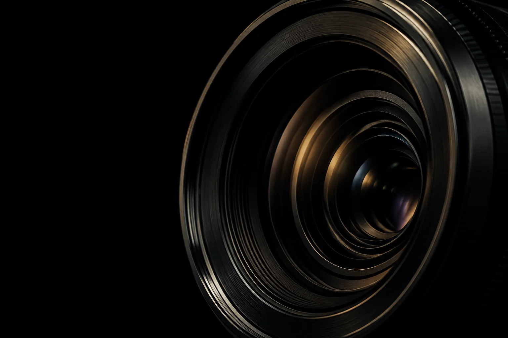
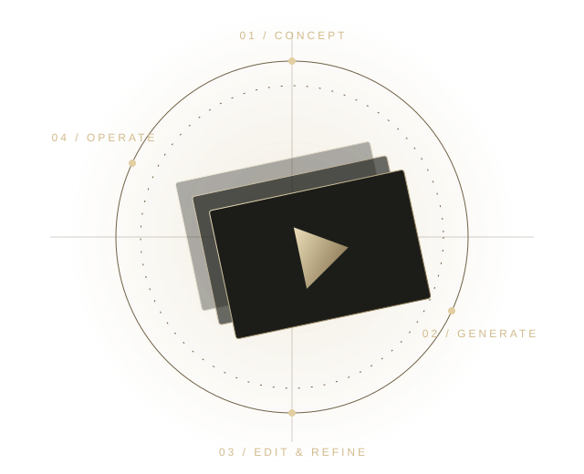
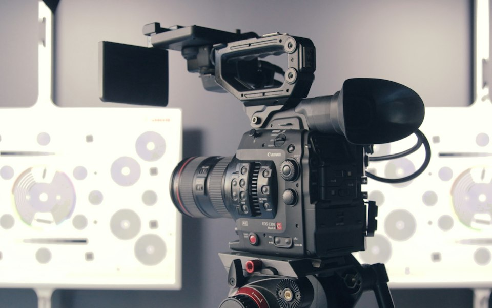
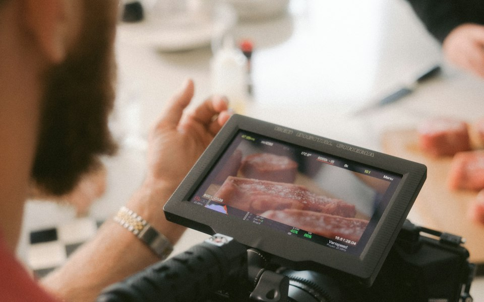
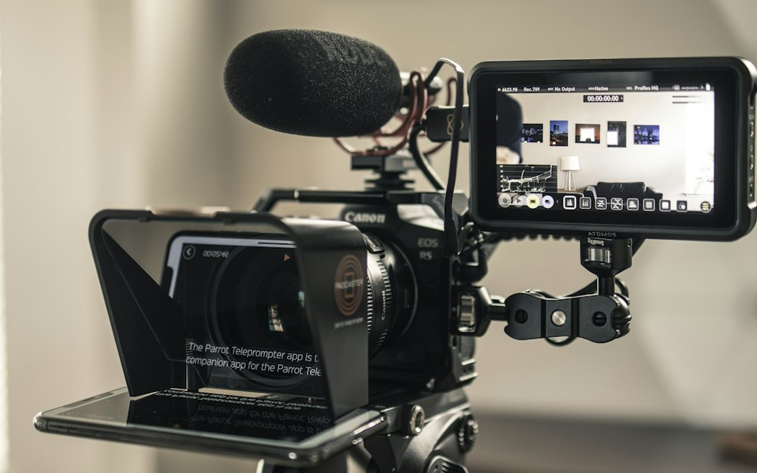
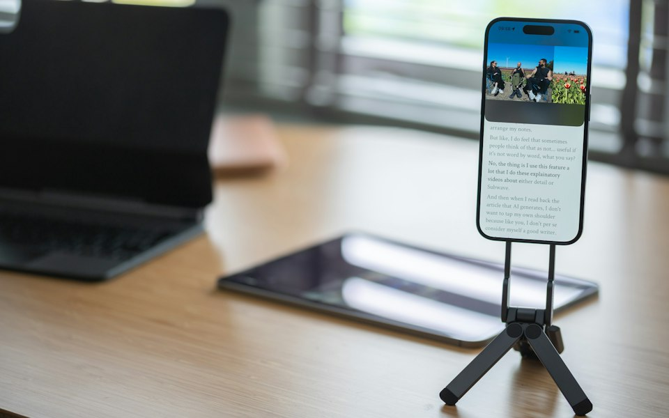
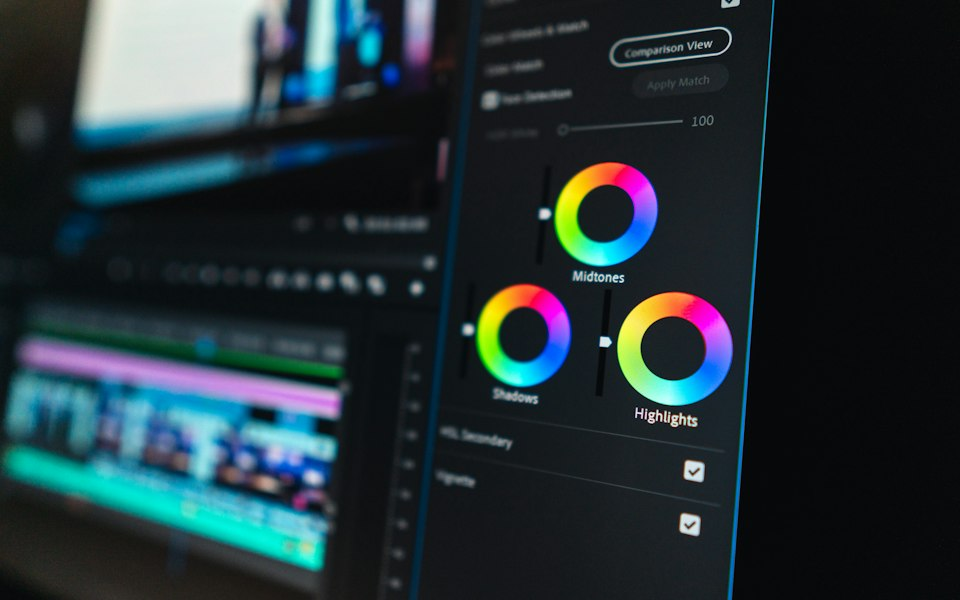
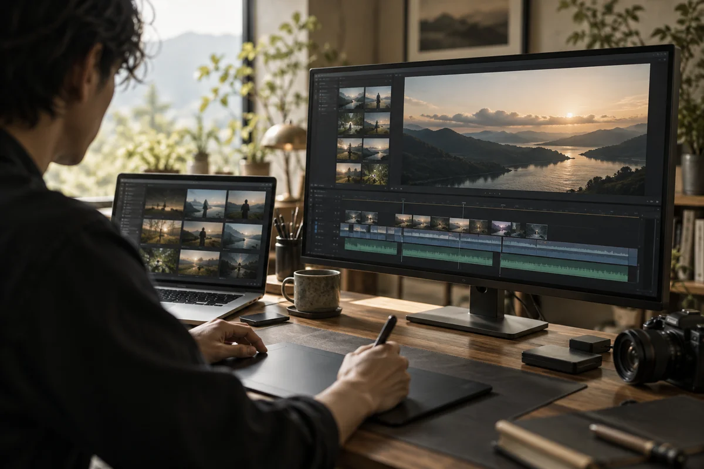
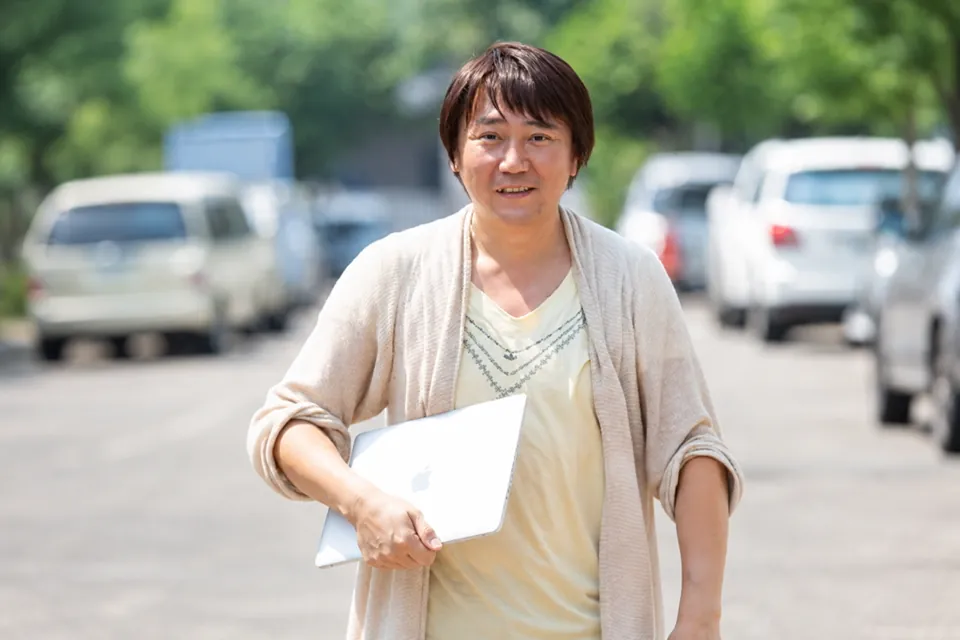
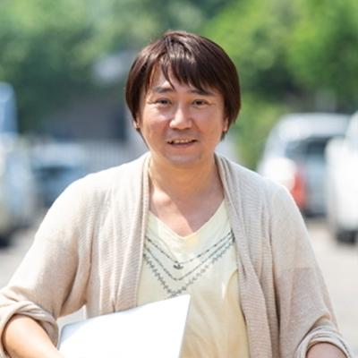

即レス × 即対応。
確認・修正・進行をスピーディーに。LINE・Chatworkでは、できる限り早い返信を心がけています。土日祝・夜間のご連絡も可能です。
動画制作・編集・ディレクション
即レス × 即対応
企業PR・広告・YouTube・SNSに対応。
一本の編集から、継続的な制作までお任せください。
動画制作実績 2,000本以上
初回オンライン相談無料 ／ 全国リモート対応

伝えたいことを、
伝わる映像に。

AI動画制作・社内導入・制作業務の効率化までサポートします。
社員の人柄を、3分程度の動画で。制作からホームページ掲載まで対応します。
サービス内容・料金は準備中のため変更になる場合があります選ばれる理由
対応の速い外注パートナーをお探しの方へ。
単発の編集から継続制作まで、安心して任せられる体制を。
確認・修正・進行をスピーディーに。LINE・Chatworkでは、できる限り早い返信を心がけています。土日祝・夜間のご連絡も可能です。
長年の会社員経験を活かし、報告・連絡・相談を丁寧に。テロップ・整音・演出まで、視聴者にとって心地よい映像に仕上げます。
スピード感のある編集者と連携し、複数本・継続案件に対応。制作指示、進行管理、クオリティ管理までまとめてお任せいただけます。
制作実績 / PORTFOLIO
制作実績
企業PR・広告・YouTubeなど、
これまでの制作実績を別サイトでご覧いただけます。
守秘義務により公開できない案件もございます。
ご希望の業種・ジャンルに近い制作物は、個別にご紹介可能です。
対応業務 / SERVICES
必要な工程だけのご依頼も、
制作全体のディレクションもご相談ください。

企業やサービスの魅力、働く人の想いを伝える映像に。紹介動画から採用・インタビューまで対応します。

商品の魅力や伝えたいメッセージを整理し、視聴者に届く構成と編集で仕上げます。

企業チャンネルや対談、解説動画など。構成・編集・サムネイルから継続運用までご相談ください。

短い時間で魅力が伝わる動画に。縦型動画の編集や、SNSに合わせた見せ方をご提案します。

素材を活かした編集から、制作指示・進行・品質管理まで。必要な工程だけでもお任せください。

AIを活用した映像制作と、社内で作れる仕組みづくり。ツール選び・研修・制作工程の改善を支援します。
写真はサービスのイメージです。フリー素材・AI生成画像を使用しています。実際の制作物は制作実績をご覧ください。
対談・説明会・企業研修・オンライン講座にも対応。講義資料の合成、文字起こし、ナレーション同期まで、用途に合わせて仕上げます。
YouTubeの視聴を伸ばす戦略提案やInstagram運用代行もご相談ください。AI音声・画像・動画生成を活用した編集にも対応しています。
AI動画制作・導入支援
AIを使った動画制作から、ツールの導入・担当者研修・制作工程の見直しまで。必要なところからご相談いただけます。
AI動画制作・クリエイティブ支援
広告・SNS・企業PRなど、目的に合わせた映像を企画・制作。AIによる画像・動画・音声生成と、実写素材や編集技術を組み合わせ、伝えたい内容を形にします。
AI導入・内製化支援
ツールの選定、制作手順の整理、マニュアル作成、担当者への研修まで。動画編集スクールでの講師経験を活かし、実際に手を動かしながら学べる形で進めます。
制作フローの改善・継続サポート
企画・台本・素材づくり・字幕・編集など、今の工程を確認。AIを取り入れる部分と人が仕上げる部分を整理し、品質を保ちながら継続できる制作体制を目指します。
作る経験があるから、
現場に合う提案ができる。
企画・編集・ディレクション・外部スタッフへの制作指示まで。制作現場で培った経験をもとに、ご予算や社内体制に合わせたAI活用をご提案します。
初回オンライン相談無料・全国対応
制作の流れ / FLOW
ご相談から納品まで、
進め方を共有しながら丁寧に伴走します。
初回のZoomヒアリングは無料。目的・ターゲット・ご予算・納期を伺います。
制作内容とスケジュールを整理し、方向性をすり合わせます。
合意した構成をもとに制作。必要に応じて進行管理も行います。
映像をご確認いただき、修正内容を相談しながら仕上げます。
用途に合った形式で納品。継続的な制作・運用もご相談いただけます。
プロフィール / ABOUT


YOSHIO TSUCHIYAHIROSHI Design 代表 / 動画制作・ディレクション
中央大学卒業後、会社員として長年従事。現在は都内を拠点に、企業案件を中心とした動画制作・ディレクションを行っています。法人・個人を問わず、目的とご予算に合わせて柔軟に対応します。
動画編集スクールの講師としても活動。自身のYouTubeチャンネル運営経験があり、SNS登録者は2万人超。編集技術に加え、視聴者に届くコンテンツづくりの視点を活かします。
企画・構成、編集、制作進行からSNS・YouTube運用まで一貫対応。全国・海外からのリモート案件はもちろん、必要に応じて全国の現場へ。フットワーク軽く、制作を支えます。
TOOLS
お問い合わせ / CONTACT
初回のZoomヒアリングは無料です。
企画が固まる前でも、お気軽にご相談ください。
企業・制作会社・広告代理店の皆さまへ
単発のご依頼・継続的なパートナー契約に対応